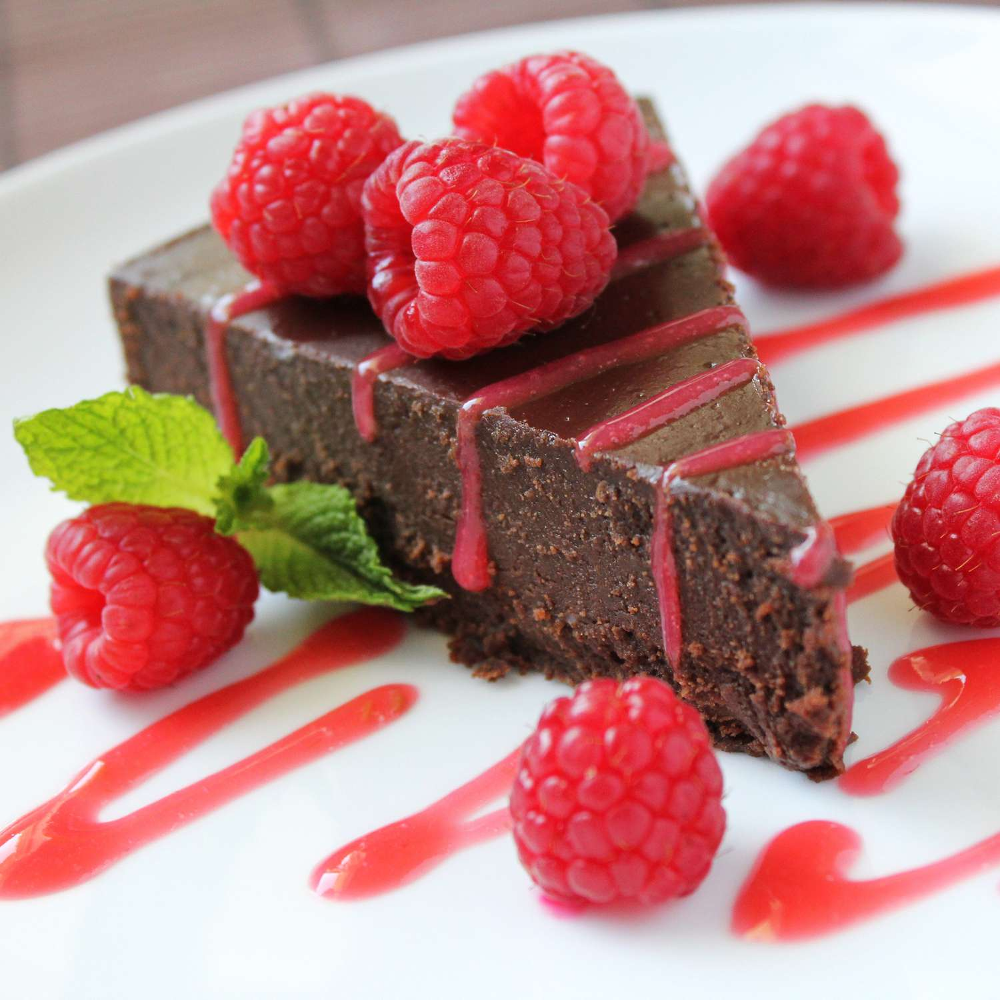

Flourless Chocolate Cake

Description
This flourless chocolate cake is rich, dense,
and full of intense chocolatey flavor. Prep time
25 minutes, cook time 45 minutes, additional time
8 hours, serves 16.
Ingredients
- 3/4 cup white sugar
- 1/2 cup water
- 1/4 teaspoon salt
- 18 (1 ounce) squares bittersweet chocolate
- 1 cup unsalted butter
- 6 eggs
Steps
-
Preheat the oven to 300 degrees F (150 degrees C).
Grease a 10-inch round cake pan; set aside.
-
Combine sugar, water, and salt in a small saucepan
over medium heat. Stir until completely dissolved;
set aside.
-
Melt bittersweet chocolate in a microwave-safe glass
or ceramic bowl in 15-second intervals, stirring after
each interval, 1 to 3 minutes. Pour chocolate into the
bowl of an electric mixer.
-
Cut butter into pieces; beat butter, one piece at a
time, into chocolate until combined. Beat in hot
sugar water. Slowly beat in eggs, one at a time.
-
Pour batter into the prepared cake pan. Have a pan
larger than the cake pan ready; put the cake pan in
the larger pan and fill the larger pan with boiling
water halfway up the sides of the cake pan.
-
Bake cake in the water bath in the preheated oven
for 45 minutes. The center will still look wet.
Place cake in the refrigerator until thoroughly
chilled, 8 hours to overnight.
-
To unmold, dip the bottom of the cake pan in hot
water for 10 seconds and invert onto a serving plate.
-
Garnish with fresh berries of your choice and enjoy
your delicious flourless chocolate cake!